Solution: Puzzle of Dragons
Answer: DAZZLING
Written by Phillip Ai
This puzzle centers around Puzzle and Dragons, a mobile match-3 JRPG. It presents 5 teams with boards and a 6th team that is missing its leaders and the board.
The flavor text clues that you'll want to activate the leader skills for each board. We'll go through how to do that for each one in depth, but note that while this logic essentially relies on orb counts, solvers can also consider the actual board when trying to make combos.
Notes
- When referencing units for their active skills or leader skills, an abbreviation of their name will be used.
- Occasionally, certain skills have extraneous parts (such as affecting skyfall for future turns, which are irrelevant). These will be omitted in descriptions.
- Jammer, Poison, and Mortal Poison orbs are often changed together. I'll refer to them as JPM when they are changed together.
- Occasionally, I'll give a string for the board. It can be placed in pad.dawnglare.com to visualize the board and combos.
Board 1
The available active skills are:
- Goemon - Entire board => Fire.
- Flamme - Right-most column => Fire.
- Sweet Tooth Zaerog - Top-most row => Dark, Bottom-most row => Wood. Lock Fire, Water, Wood, Light, Dark, Heart orbs.
The leader skills are:
- Ninegaruda - ATK x3 when clearing 6 connected Dark orbs. ATK x3 when clearing 6 connected Fire orbs.
- Awoken Raphael - ATK x6 when there are 5 or less orbs on the board after matching. ATK x4 when attacking with 4 colors out of (Fire, Water, Wood, Light, Dark).
Logic
- Ninegaruda requires 6 connected Fire orbs, there are currently none.
- Flamme and Goemon are the only ones that can create Fire orbs. Flamme creates at most 4 (since the Heart orb in the right column is locked). Thus, we must use Goemon at some point.
- Note that we also need 4 different non-Heart colors for Raphael's leader skill.
- Let us assume we use Goemon before Zaerog (if we use Zaerog at all). Regardless of whether or not we use Flamme, this will create a board with two Light orbs, two Heart orbs, and many Fire orbs (i.e. the only non-Fire orbs are those that were locked).
- We have no way to create Light or Water orbs, and 2 is not enough for a combo. Thus, we cannot match 4 colors as required by Awoken Raphael. Thus, we must use Zaerog before Goemon.
- If we use Zaerog => Goemon, there will only be 4 Fire orbs. We must use Flamme before Zaerog to create more Fire orbs before the board is locked.
Thus, the units whose active skills used are:
- Flamme, the Burst of Crimson Gear
- Sweet Tooth Phantom Dragon King, Zaerog∞
- Avowed Thief, Ishikawa Goemon
After using these skills, the board will be DDDDDDLDGLHRRLDGLHLDRRRRLGGLHG.
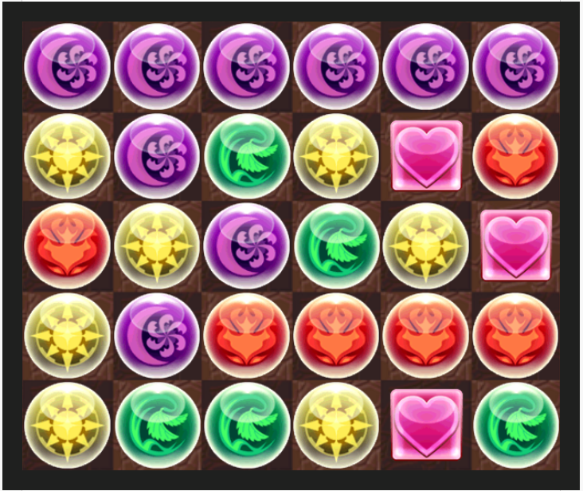With this board, it should be clear that the best move is to take the Fire orb on the left side in the 3rd row and move it all the way to the end, connecting the Fire orbs and matching various combos.
The board would then be DDDDDDLDGLHRLDGLHRLDRRRRLGGLHG. We can see that it fulfills all conditions for both leader skills.
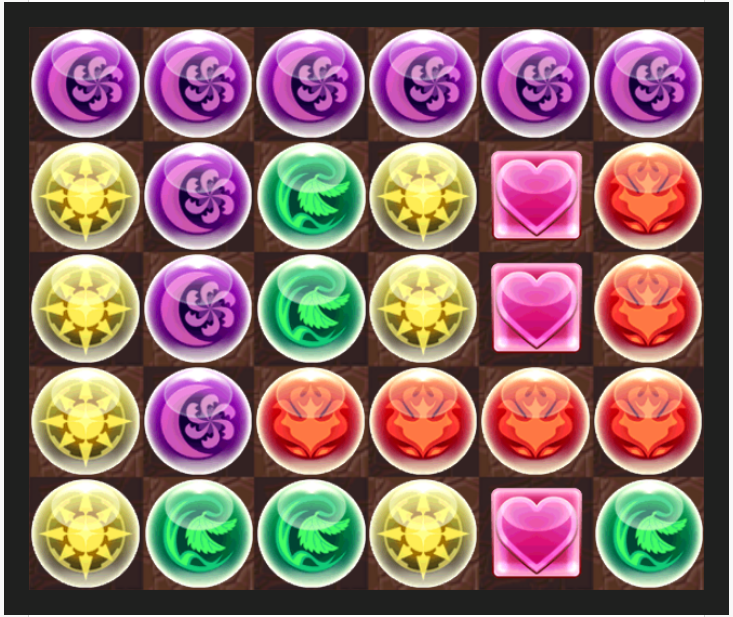The solver should note that this also aligns with the flavor text: "there should be a straight path available. Start at the beginning and move right along to the end." This should help the solver find the board movement for other boards.
Board 2:
Available actives
- Baldin - Light + Jammer => Fire. Wood + Poison + Mortal Poison => Dark.
- Water Knight - Heart => Water. Bind recovery 3 turns.
- Spica - Heart + JPM => Wood.
- Dark Swordsman - Heart => Dark. Bind recovery 3 turns.
- Yamato Takeru (bound 7 turns) - Wood => Fire. Dark => Heart. Enhance Heart orbs.
- Odin (bound 4 turns) - Bind recovery 5 turns.
Leader skills
Logic
- The only way to create Fire orbs is with Yamato Takeru and Baldin.
- Baldin can only create 2 Fire orbs, so Yamato Takeru must be used. (It is not certain yet if Baldin is used.)
- We've established that we must use Yamato Takeru, which converts Wood => Fire. We must therefore create more Wood orbs afterwards using Spica.
- >Note that we must also use Baldin before Spica (if ever) since Baldin also removes Wood orbs.
Thus, we have our ordering for the active skills:
- Dark Dragon Swordsman
- Water Dragon Knight
- Shining Lance Wielder, Odin
- Long-Standing Desire God-Emperor, Yamato Takeru
- Mega Awoken Blade Mechdragon, Baldin
- Dark Plant Mechanical Star God, Spica
The resulting board is DBLDBLDDRRRRBGBDGLGGGGGGLDGLDG.
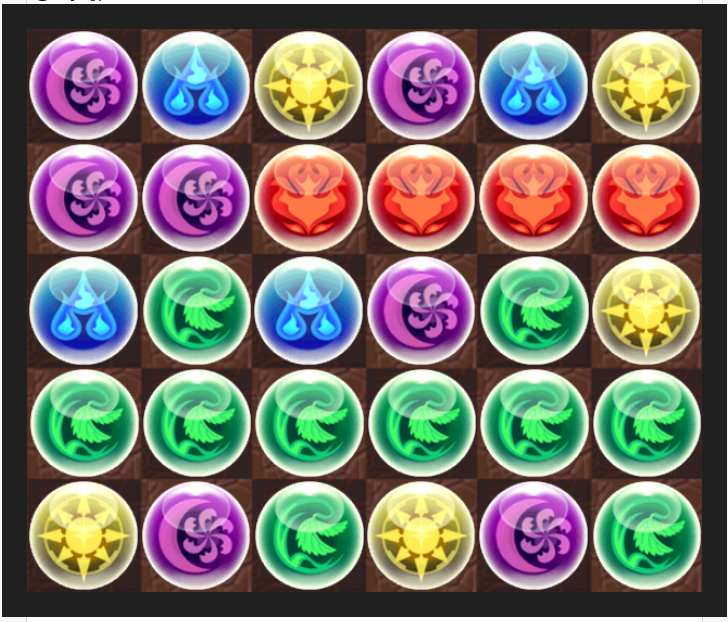If we take the Light orb in the left column in the 5th row and move it to the end of the row, we see that the Wood orbs in row 5 line up with those in row 3, the Light orb forms a combo in the last column, and the Dark orbs form a column in column 4. With cascading, it eventually forms 6 combos, and all conditions are met for the leader skills.
The final board is DBLDBLDDRRRRBGBDGLGGGGGGDGLDGL.
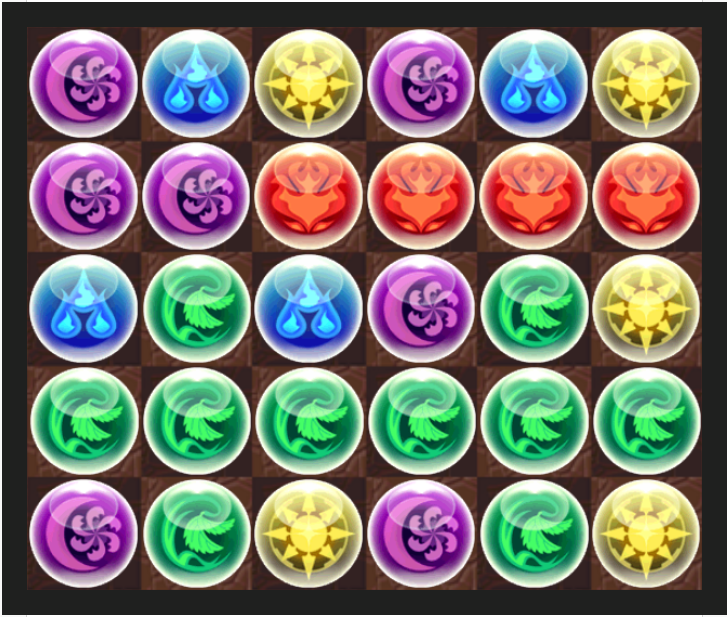Board 3
Available actives
- Y'Shtola - Dark => Water. Fire => Heart.
- Gabriel - Light => Water. Dark => Heart. Enhance Heart.
- Dark Laila - Bottom-most row => Dark.
- Awoken Osiris - Unlock orbs. Right-most column => Wood.
- RDQXQ - Dark => Light. Fire => Heart. JPM => Water.
Leader skills
- Moby Dick - ATK x3 with exactly 6 combos. ATK x8 with 9 connected Heart orbs.
- RDQXQ - ATK x4 with 4 colors. ATK x4 with 8 connected Light or Water orbs.
Logic
- Moby Dick requires 9 Heart orbs. We have three skills that create Heart orbs: two of them turn Fire => Heart, and the third turns Dark => Heart. There are not enough Fire orbs to only rely on those Heart-makers, so we must use Gabriel to turn some amount of Dark orbs to Heart orbs.
- RDQXQ requires 8+ connected Light or Water orbs. Let us assume for now that we create 8+ Light orbs.
- We've already established that we must use Gabriel, which converts Light => Water orbs. Thus, we must use RDQXQ after Gabriel to create Light orbs.
- To get 8 Light orbs, we must use Laila (creating 6 Dark orbs) and Osiris (unlocking 3 Dark orbs). Note that these must be used after Gabriel, or the Dark orbs will go towards Heart orbs rather than Light orbs as desired.
- The board would look like something like this (depending on the order of Laila vs Osiris): LGHBBGGLGHHBHHHHBGLGHHBGLLLLLL.
- There's no particular way to make a simple move to connect the Light orbs; even if there were, you would have 1 Heart combo, 1 Light combo, 2 Wood combos, and 1 Water Combo, for a total of 5 combos, whereas Moby Dick requires 6.
- Thus, we cannot satisfy RDQXQ's leader skill with Light orbs, and we must use Water orbs.
- As we just established, we need 8 Water orbs.
- Let us try to create the Water orbs without using Laila, solely from the existing Dark and Light orbs.
- If we do not use Awoken Osiris to unlock the 3 Dark orbs, there will only be 7 Water orbs. So we must use Osiris, which gets rid of the two Light orbs in the right column.
- We can form exactly 8 Water orbs from the remaining Dark and Light orbs. Unfortunately, we've established that Gabriel must convert at least one Dark orb to Heart.
- Thus, it is impossible to create the Water orbs without Laila, and we must use Laila => Y'Shtola.
- From here, we can see that Gabriel => Laila => Y'Shtola gives us the desired orb count, and a pretty good board.
Actives used
- Guiding Archangel, Gabriel
- Mysterious Guest, Laila
- Sharlayan Sage, Y'shtola
The resulting board will be DGHJJJGDGHHBHHHHBGDGHHBGBBBBBB.
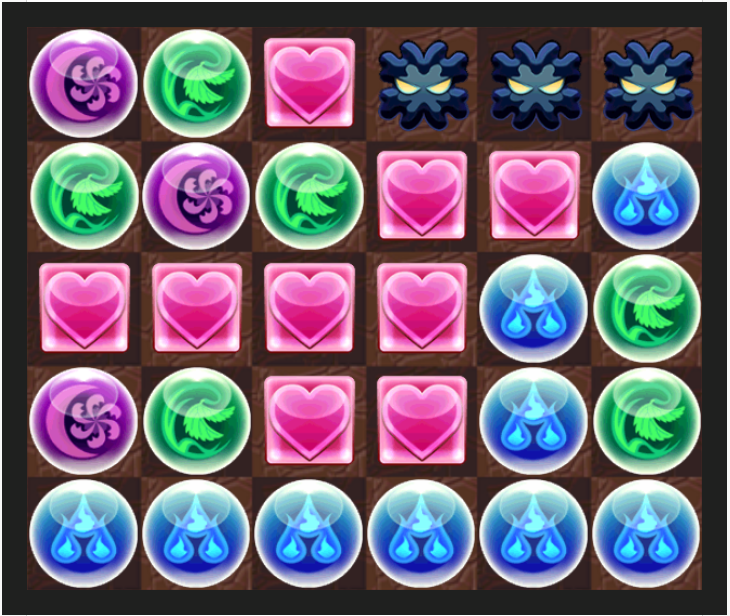Since we want 6 combos (for Moby Dick), we can see that taking the Wood orb in the left column in row 2 and moving it to the end of the row sets up both Wood combos, the Dark combo, and connects the Heart combo. We can furthermore see that we cannot use Osiris or RDQXQ, as they will destroy the Jammer combo.
The final board is DGHJJJDGHHBGHHHHBGDGHHBGBBBBBB.
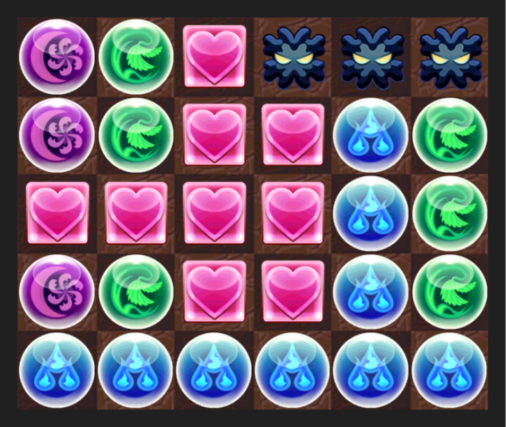Board 4
Available actives
- Nergigante - Left column => Dark. Right column => Heart.
- Jord (bound 1 turn) - Dark => Wood. Fire => Light. Lock Wood + Light orbs.
- Merlin (bound 1 turn)- Fire + Jammer => Water. Heart + Poison + Mortal Poison => Fire.
- Alraune - Bind recovery 3 turns.
Leader skills
- Ronove - ATK x4 when matching Fire, Water, Wood, Light, Dark simultaneously. ATK x4 when matching a Heart cross combo.
- Mel - ATK x6 when matching 2 Heart combos.
Logic
- We need a combo for each color, but we don't have enough Wood orbs or Light orbs. We must therefore use Jord.
- If we use Jord, it will get rid of all of our Dark orbs. We must therefore use Nergigante after we use Jord. (Note that we will still have 3 Fire orbs remaining, since they are locked.)
- Note that we need 1 Heart cross for Ronove, which requires 5 Heart orbs. We also need one more Heart combo for Mel, for a total of at least 8 Heart orbs. If we use Merlin at any point, we will not have enough Heart orbs.
- Thus, we want to use Jord => Nergigante. However, Jord is bound. We must therefore use Alraune first.
Actives used
- World Tree Sprite, Alraune
- Awoken Jord
- Nergigante
The resulting board is LLBHHGDLLLHHDBBGGGLBBLRHDRRHHH.
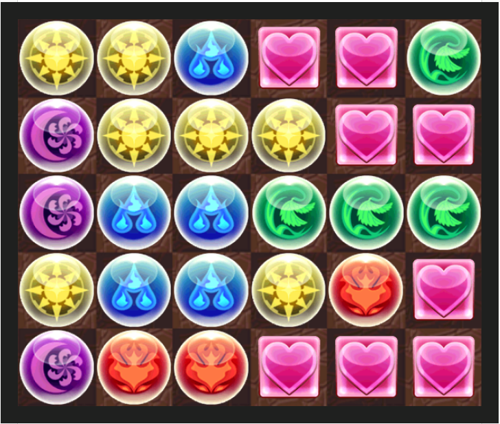We choose row 4 (this is clued by moving the Fire orb into position to fall and moving the Heart orbs so there are the correct amount in each column to form the Heart cross).
The final board is LLBHHGDLLLHHDBBGGGBBLRHLDRRHHH.
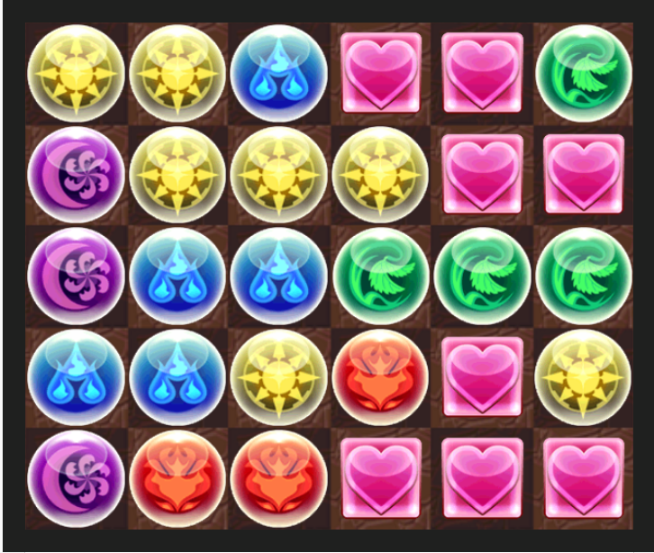Board 5:
Available actives
- Anubis - Wood => Dark.
- Chester - Jammer + Poison => Heart.
- Cotton - Fire => Wood, Water => Heart.
- Aife - Unlock orbs. Fire + JPM => Water.
- Valkyrie - Heart => Dark.
- AU&Y - Fire => Water, Heart => Dark, JPM => Wood.
Leader skills
- Anubis - ATK x10 at 10 combos.
- AU&Y - ATK x5 at 3 Water combos. ATK x4 when attacking with Water, Wood, Light, and Dark simultaneously.
Logic
- Note that AU&Y's leader skill requires 9 Water orbs while there are only 6 at the moment.
- There are two ways to create Water orbs - Aife, and AU&Y.
- AU&Y only turns Fire => Water, and there still would not be enough.
- Thus, we must use Aife at some point.
- Furthermore, we cannot use AU&Y before Aife, as there will again not be enough Water orbs if we do so. Thus, we cannot use AU&Y to create Wood orbs.
- If we use Anubis at any point, we must create Wood orbs afterwards. Cotton can convert Fire => Wood orbs, but there are only 2 Fire orbs, and AU&Y cannot be used to create Wood orbs. Thus, we cannot use Anubis at any point.
- We must therefore create Dark orbs from Heart orbs, using either Valkyrie or AU&Y.
- Note that, due to Anubis's leader skill, we must form 10 combos out of the 30 orbs. Thus, we must have 10
combos of exactly 3 orbs each, and the number of orbs of each color must be a multiple of 3.
- As is, the number of Heart + Dark orbs is not a multiple of 3. (Using Cotton right now would not change that; using Cotton after Aife or AU&Y might, but it should be evident that it would be impossible to create 9 Water orbs afterwards.) To fix this, we use Chester, which converts the two Jammer orbs to Heart orbs, giving us 6 Heart + Dark orbs.
- Note the 4 Wood orbs. We won't use Anubis, and we can't use AU&Y to change the Wood orbs specifically - we must therefore use Cotton to bring it up to 6 Wood orbs.
- We'll probably want to convert the Heart orbs to Dark orbs before using Cotton; otherwise, there will be a lot of Dark orbs that are connected that will be hard to separate into multiple combos.
We can thus work out the skill order to be:
- Dimensional Sorcerer, Chester
- Black Blaze, Graceful Valkyrie
- Horned Fort Toy Dragon Caller, Cotton
- Aife
The resulting board is HHHBGBDLGGBHDLGDDDBBGGBHDLHBBB.
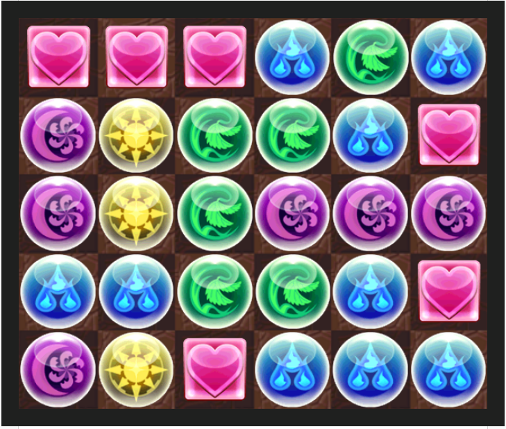If we choose row 1, we can see that the Wood orbs and Water orbs line up to cascade. (Note: Although you could move any of the three Heart orbs there, the flavor text and the other boards should indicate that you do take the leftmost Heart orb and move it right.)
The final board is HHBGBHDLGGBHDLGDDDBBGGBHDLHBBB.
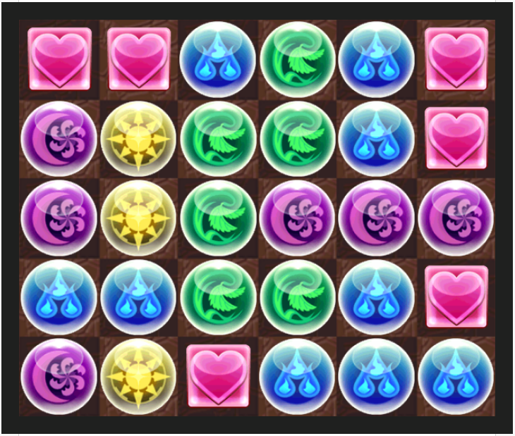Extraction
At this point, we note that we have not used the Enhanced orbs at any point yet. While some were created in boards 2 and 3, there were several that were given that should be suspicious. If we count the number of enhanced orbs (including those created in boards 2 and 3), we should note that this matches the number of blanks for each board and the number of active skills used. Furthermore, the column that the enhanced orbs are in aligns precisely with the units whose actives were used. We take the row number (1-5 top-bottom) and index into the name of the unit, and we get:
- flAmme
- sWeet
- avOwed
- darK dragon
- watEr dragon
- shiNing
- long-Standing
- mega Awoken
- darK plant
- gUiding
- mYsterious
- shArylan
- worLd
- awokEn jord
- nerGigante
- dImensional
- blAck
- horNed
- Aife
This gives us AWOKENSAKUYALEGIANA, or Awoken Sakuya and Legiana, our two missing Leaders.
- Awoken Sakuya - ATK x2 at 10 combos. ATK x5 when attacking with Fire, Water, Wood, and Light simultaneously.
- Legiana - ATK x4 when there are less than 7 orbs remaining on the board. ATK x4 when attacking with Water, Wood, and Dark simultaneously.
We should also notice that our solve moves involved each of the 5 rows. We take these rows and place them into the empty board, which appears as follows (Note: we had to use the board after the orb movement for the Enhanced orbs to line up with the units whose actives skills were used. This indicates that, in this step, we should also use the rows after the orb movement.) (The white ‘L’ indicates that the orb is locked):
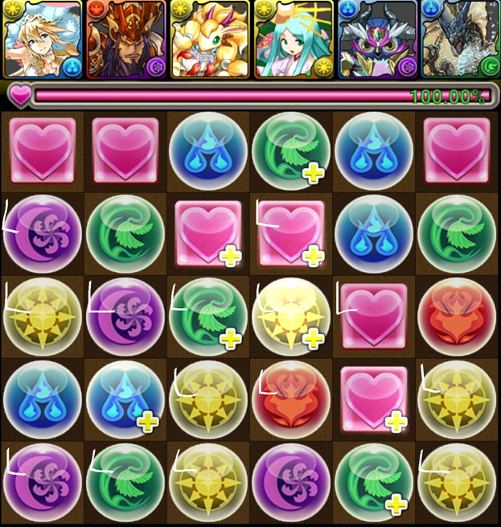Available actives
- Guan Yu (bound) - Heart + Poison => Fire
- Angelion - Dark => Heart
- Amaterasu - Full bind recovery
- Amon (bound) - Fire => Water
Logic
- Awoken Sakuya requires 10 combos, so each color must appear in multiples of 3.
- Note that there are 4 Dark orbs. The only skill that can change the number of Dark orbs is Angelion, so they
must be used.
- Note furthermore that Legiana requires Dark orbs. This should indicate that the locked orbs remain locked in this board, if there was any confusion.
- There are 5 Water orbs, which we must make a multiple of 3. We must therefore use Amon.
- Amon gets rid of Fire orbs, which we need for Awoken Sakuya's leader skill. We must therefore use Guan Yu after Amon.
- There are 2 locked Heart orbs. If we use Angelion before Guan Yu, there will only be these 2 Heart orbs, but we need a multiple of 3. Thus, Angelion must be after Guan Yu.
Actives used
- Dancing Light, Amaterasu Ohkami
- Blizzard Archdemon, Amon
- Valiant & Loyal Deity, Guan Yu
- Angelion
This time, each unit has two Enhanced orbs per column. We index both into the name and get
- DAncing
- bliZZard
- vaLIant
- aNGelion
Author’s Notes
This was the first puzzle I wrote! I play Puzzle and Dragons (PaD) a fair amount, and I thought a puzzle using the basic mechanics would be fun. It took a while though before I settled on the current extraction - part of the difficulty is that orb movement in PaD is quite unconstrained, so I had to come up with an orb movement that was convincing when found but also not immediately obvious.
Eventually of course, I settled on the row mechanic seen in the current iteration. It also lent itself well to the idea of creating a 'meta' board, but again, it took quite a while to come up with an interesting mechanic to extract an actual answer from the meta board. I did have the idea of using the enhanced orbs to give letters, but it didn't come together until I thought of hiding the meta board leaders in the enhanced orbs as well.
The puzzle actually took a while to create. I was optimistic that the constraints placed by the construction wouldn't impede me too much, but it was trickier than expected, and a lot of changes I made 'broke' work that I had already done. It was also tricky as this was my first time making a puzzle, but I got a lot of insight from an early testsolve that relied on orb-counting. And finally, I wanted to really explore a variety with the 5 different boards, and I do think I achieved that, so I'm pretty happy with the outcome.
A note on technical details: the simulators I knew of weren't able to generate an image of a board with locked orbs, so I actually had to manually pull them from the game itself (if you noticed the locked orbs had a different background, that's why). Another teammate pointed out that Nidhogg Descended gives plenty of locked orbs, and we were able to create the images for the puzzle. (I have since found a simulator that does provide locked orbs.)
One final note: I think the puzzle would have been a lot more fun if, instead of providing still images, we had provided a simulator that let solvers play with the orbs and activate the skills, and I wish I had put in the work to create that.